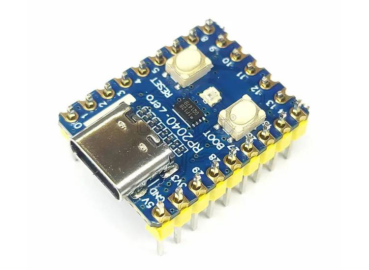
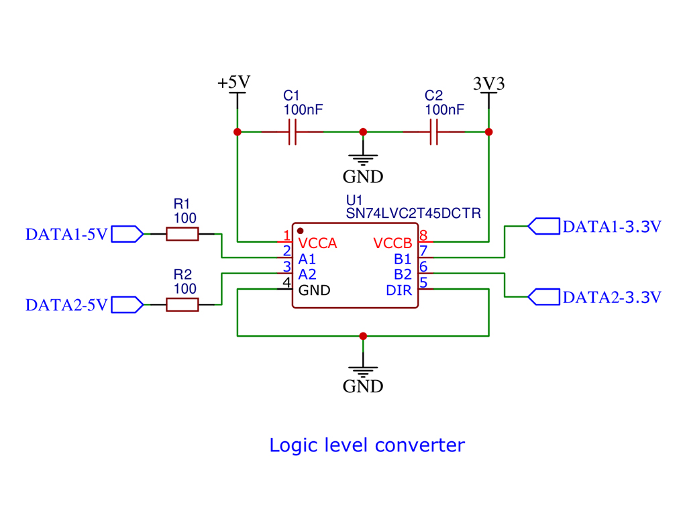
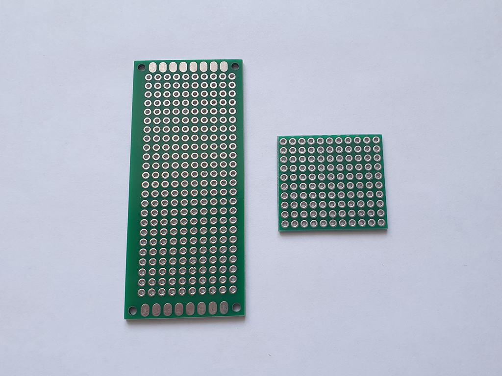

В качестве светодиодного драйвера могут быть использованы как несколько вариантов плат, так и несколько вариантов их подключения. На данный момент автором HyperHDR реализован высокоскоростной драйвер последовательного порта Adalight для плат ESP32 / Esp8266 / Raspberry Pi Pico RP2040. Также реализованы несколько способов подключения: Wled (Wi-Fi), порт Usb и мост SPI. Со всеми способами вы можете ознакомиться в репозитории автора (ссылка). Для каждого драйвера описан процесс установки ПО и рекомендуемые автором платы для покупки (остерегайтесь подделок и смотрите на отзывы о товаре на странице магазина).
HyperSerialWLED - беспроводное соединение, есть небольшая задержка.
HyperSerialEsp8266 / HyperSerialESP32 / HyperSerialPico - проводное USB-соединение.
Меньшая задержка по сравнению с WLED.
Рекомендуется использовать, когда от Raspberry Pi до микроконтроллера большое расстояние.
HyperSPI - подключение с помощью перемычек Dupont. Наименьшая задержка.
Рекомендуется, если расстояние от Raspberry Pi до микроконтроллера составляет 15-20 см.
На данный момент актуальное в моем случае решение - подключение по мосту SPI, контроллер "RP2040-Zero"
(ссылка).
Архив предыдущих реализаций светодиодного драйвера разместил
(на данной странице).

Многие светодиодные ленты с напряжением 5v могут работать и без переключателя уровней, особенно если провод между контроллером и светодиодной лентой очень короткий. Однако иногда могут возникать мерцания, например, светодиоды кратковременно вспыхивают белым светом. Возможны и более серьезные сбои. При использовании светодиодных лент с напряжением 12 или 24v обычно не обойтись без переключателя уровней. Однако для светодиодных лент с напряжением 5v, особенно в условиях производственной эксплуатации, также настоятельно рекомендуется использовать переключатель уровней для обеспечения бесперебойной работы. Переключатель уровней адаптирует уровень сигнала микроконтроллера (3,3v) к уровню сигнала светодиодной ленты (5v для всех типов адресуемых светодиодов).
Переключатель выполнен на основе микросхемы 'SN74LVC2T45' (ссылка).

Макетные печатные платы относятся к универсальными и незаменимыми элементами с целью быстрой сборки схем без необходимости изготовления собственной печатной платы (что усложняет сам проект). Для дальнейшей сборки подойдет макетная плата с размерами 3x7 см (ссылка).
Я решил подойти к сборке не совсем стандартным путем, близкую по размеру плату и укоротил со всех сторон до необходимого мне размера (с обработкой торцов). В данном случае лично мне было так удобнее, так сама готовая плата будет максимально компактной.

Кроме самой макетной платы нам необходимы дополнительные элементы:
- круглый штыревой разъем 2.54мм (тип "Мама") (ссылка),
- гнездо на плату прямое (9 pin, тип "Мама") (ссылка),
- вилка штыревая 2.54мм (тип "Папа") (ссылка),
- конденсатор 100 мкФ (ссылка),
- резистор 100 Ом (ссылка),
- плата адаптера: SOP8, SOIC8, SSOP8 -> DIP8 (ссылка),
- 4-контактный коннектор RGBW / RGB (ссылка),
- перемычка Dupont (тип "Мама-Мама") (ссылка).